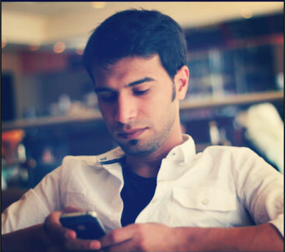

Ibrahim

ABOUT ME
From a young age, I knew I would follow in my father's footsteps and my brothers before me—in a career in the military. The Royal Saudi Air Force, to be exact. There was never a question whether my studies would lead me to military academy, then to the Air Force. The path was laid for me.
And so that is what I did. I became a pilot, flying military jets over the sands of Bedouin. I was a training officer, teaching young cadets the lessons I had learned: Learn from your mistakes, never stop learning.
But it was my time working in information technology and security as an officer in the Computer Department that I truly felt I had found my calling. I have done numerous jobs in my career in the Air Force, some by my choice and some chosen for me. But it was working in the computer science realm where I finally felt I was doing what I was meant to do. This was for me. This was my path. to continue my studies of FEWD at GA. would arm me with the knowledge and the tools I need to continue working and excelling in this field. This cirtfect would be the next step in a career I know I love, where my skills matter and my talents shine. And I am grateful to have the support of my family, my colleagues and my country to follow my dreams now.